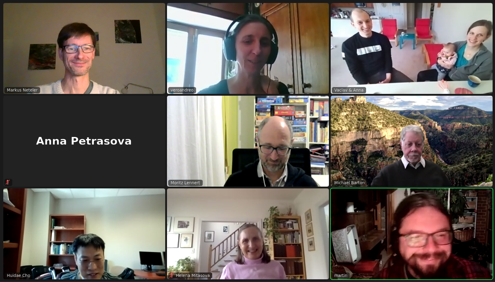
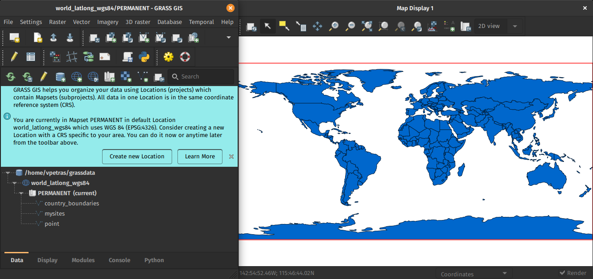
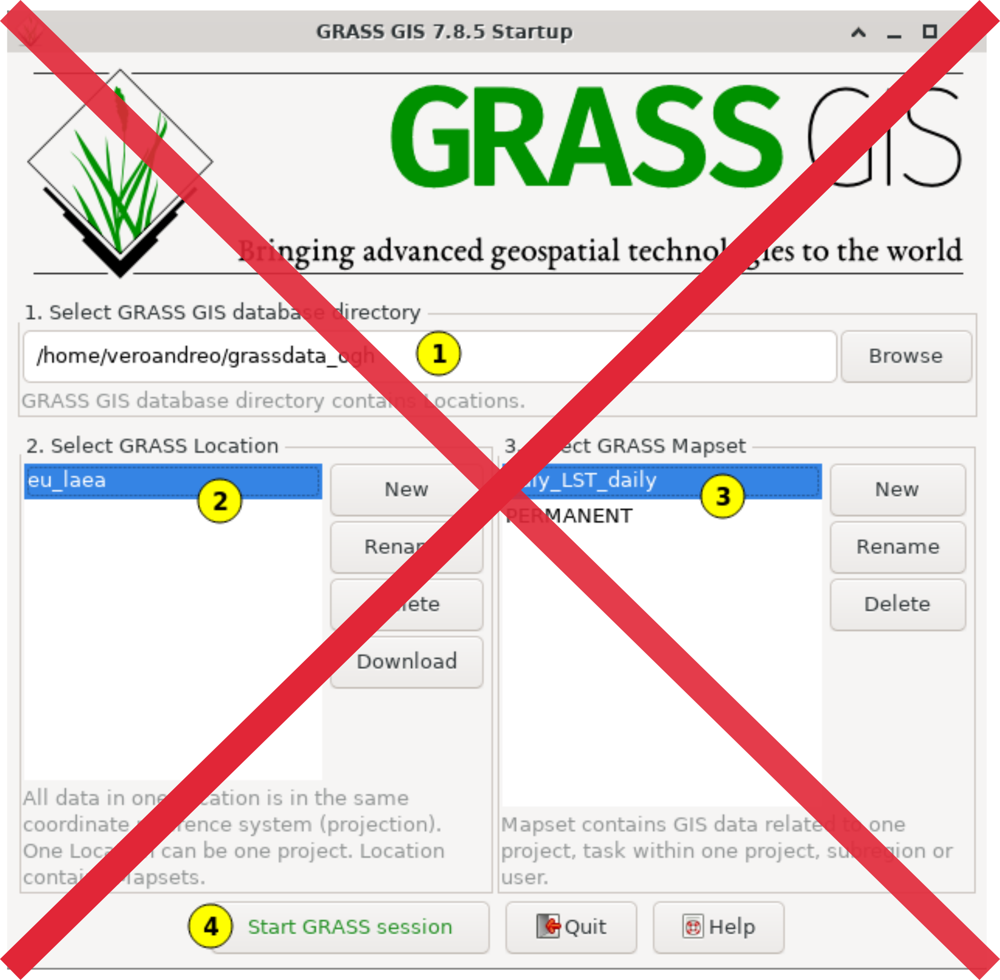
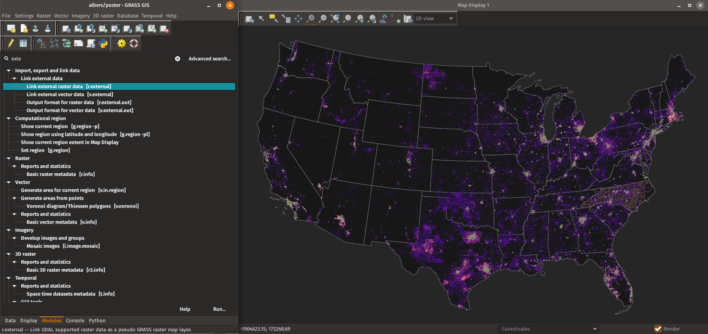

State of GRASS GIS:
The Dawn of a New Era
Vaclav (Vashek) Petras*
& Veronica Andreo, Martin Landa, Anna Petrasova, Guido Riembauer,
Maris Nartiss, Moritz Lennert, Markus Metz, Stefan Blumentrath,
Huidae Cho, Markus Neteler
*
NCSU GeoForAll Lab
at the
Center for Geospatial Analytics
NC State University

FOSS4G 2021 Buenos Aires
Vaclav (Vashek) Petras
- Geospatial Research Software Engineer at NC State
- BS & MS in Geoinformatics, Czech Technical University in Prague
- PhD in Geospatial Analytics, NC State
- GRASS GIS Development Team Member
- GRASS GIS Project Steering Committee Member
- Open Source Geospatial Foundation Charter Member

Community
- Open community of users and developers
- Contributors to code, documentation, translations, …
- Project Steering Committee
- PSC Chair: Verónica Andreo (since February 2021)

Credit goes to the whole community, not just this talk's authors.
Support
- Community support
- user mailing list (with vast archives since 1991)
- GIS StackExchange (use increasing)
- Discussions on GitHub (since September 2021)
- Commercial support Write to grass-dev or contact me privately if your name is not here!
General Features
- Free and open source, you can use, modify, improve, share
- Large amount of tools: 500+ core modules, 300+ addons
- Graphical User Interface and Command Line Interface
- Python API, C API, and libraries
- Interface & connection with R, QGIS, WPS, …
- Different data types supported: vector, raster (including satellite imagery), 3D raster or voxel, and space-time datasets.
Scientific Foundations
- references to related scientific papers
- references to papers associated with tools or libraries
- usage visible in scientific literature
- GRASS GIS Google Scholar profile (experimental)
- DOI: 10.5281/zenodo.5176030 (experimental)

Innovation with Stability
Improvements bring need for changes, but breaking changes are introduced only when needed, for example:- Graphical user interface changes as needed.
- Python API added in v6 taking leading position from Bash, matured in v7, additions for 8.2.
- Basic things continue to work in the same way.
Raster algebra expression from 2002 (v5) in 2021 (v8):
depressions =
if((elevation - fill) < 0, 1, 0)
All-in-one Software Suite
- All matured tools available right away.
- Download of experimental tools possible.
- Network analysis, hydrology, OBIA, time series, …

GRASS GIS 8
- Roadmap:
- 7.8.6 Fall 2021
- Old but still good.
- 8.0.0 Fall 2021
- First release in the new era.
- 8.0.1 Winter 2021
- What did we miss?
- 8.2.0 Spring 2022
- Enjoy the GSoC 2021 results!
- 7.8.6 Fall 2021

New Era
Improved First-time User Experience
Initial project sets up automatically. Guidance provided for next steps.
by Linda Kladivova & rest of the community (many reviews, calls, user surveys, …)
No Startup Screen
Single-Window GUI
Code refactoring to enable Single-Window GUI with dockable widgets.

Opt-in preview coming in 8.2.
See talk I hated the way GRASS started so I changed it. (2021-09-30, 08:00)
by Linda Kladivova
Centralized Data Management
All data manipulation centered around revamped Data tab.
by Linda Kladivova, Anna Petrasova, Vaclav Petras
Dark Theme Support
Interface respects system dark theme.
by Anna Petrasova, Nicklas Larsson
GitHub-centered Software Development
- "Fork me on GitHub"
- Filling out issues (tickets) requires only GitHub login.
- All issues are publicly visible.

Improved and robust code quality checks
- Python code formatted by Black.
- Python code checked against Flake8.
- Most of warnings in C code removed and now checked.
- Code tested with CodeQL.

by Nicklas Larsson, Vaclav Petras, Anna Petrasova, Carmen Tawalika, ...
Docker Containers
- Different flavours (add or suggest more!)
- Built and updated automatically

actinia
- REST API
- "3rd party" project, open source
- github.com/mundialis/actinia_core
See talk News from actinia (2021-09-30, 09:30)
by Markus Neteler, Carmen Tawalika, Anika Weinmann, …Improved HPC readiness
- Recipes for High Performance Computing setups
- Better integration with conda environments
Grassy the Hungry Cow
-----------------------------------
| I'm always hungry for more GRASS! |
-----------------------------------
\ ^__^
\ (oo)\_______
(__)\ )\/\
||----w |
_\|/__\|/__\|/_ || || _\|/__\|/_
More Improvements
Lidar Data Import with PDAL
- binning using any point dimension (including user defined ones, e.g., from PDAL filters)
- point filtering by values in any dimension
- support of 19 binning methods (including eigenvalues)
by Vaclav Petras and Maris Nartiss
Latest PROJ and GDAL
- Support for PROJ >=6 added.
- Support for GDAL >=3 added.
- WKT2 can be used for CRS definitions.
- High-accuracy coordinate transformations supported.
by Markus Metz
Skeletons and Centerlines
v.voronoi tool can now create area skeletons and centerlines.
by Markus Metz
Semantic Labels for Rasters
- add a semantic label to any raster map (e.g.,
S2_1orred) - image classification use sematic labels to identify bands
- new portable signature files created as a result of training use it to identify bands
- different scenes can then be classified if semantic labels are the same

by Maris Nartiss and Martin Landa
Faster External Data Links
r.external links (opens) external raster data (GeoTiffs, …) faster.(2-5× faster, or almost no time for some workflows)

by Markus Metz
Great for workflows when only portion of the data is processed in GRASS GIS.
More to Come in 8.2
OpenMP parallelization
r.series, r.univar, r.neighbors, r.patch, r.resamp.interp, r.resamp.filter, r.mfilter, r.slope.aspect + benchmarking library
Coming in 8.2
by Aaron Saw Min Sern (Google Summer of Code 2021)
Integration of GRASS GIS and Jupyter Notebooks
New Python library that simplifies the launch of GRASS GIS in Jupyter and the display of vector & raster data.
by Caitlin Haedrich (Google Summer of Code 2021)
Spatial Query of Projections
Query CRSs spatially using user-drawn geometries.
by Huidae Cho, Owne Smith
Much More by Broader Community
FUTURES
r.futures - set of tools for urban growth modeling

by NC State Center for Geospatial Analytics
See poster:
FUTURES v2: Urban Growth Modeling at Scale
Thursday, 5pm
PoPS
r.pops.spread - Pest or Pathogen Spread simulation

by NC State Center for Geospatial Analytics
Tangible Landscape
Geospatial tangible user interface

by NC State Center for Geospatial Analytics
Valley Bottom Flatness Index
r.valley.bottom - Multi-resolution Valley Bottom Flatness (MrVBF)

by Helmut Kudrnovsky, Steven Pawley
Sentinel, MODIS, Landsat, NED, NAIP
Automated download and import of common datasets i.sentinel, i.modis, i.landsat.download, r.in.usgs, …

by Luca Delucchi (Fondazione Edmund Mach), Martin Landa (OpenGeoLabs), Anika Weinmann (mundialis), Guido Riembauer (mundialis), Roberta Fagandini (GSoC), Zechariah Krautwurst (GSoC), Anna Petrasova (NC State University), Vaclav Petras (NC State University), Veronica Andreo (CONICET, Argentina), …
Resources
- Documentation:
- Tutorials (my three favorites):
-
Books:
- Open Source GIS: A GRASS GIS Approach (the classic)
- Tangible Modeling with Open Source GIS (use-case-based with additional flavors)
- Open Source Approaches to Spatial Data Handling (broader context)
Twitter: vaclavpetras
LinkedIn: Vaclav Petras
wenzeslaus.github.io/grass-gis-talks
Thank you for Attending - This Session Has Ended